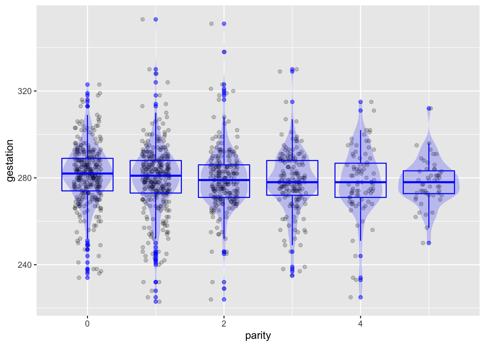
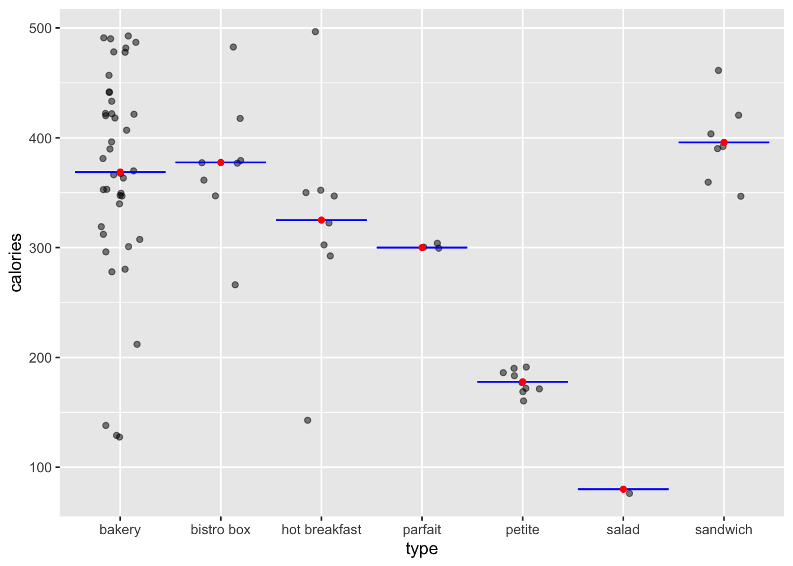
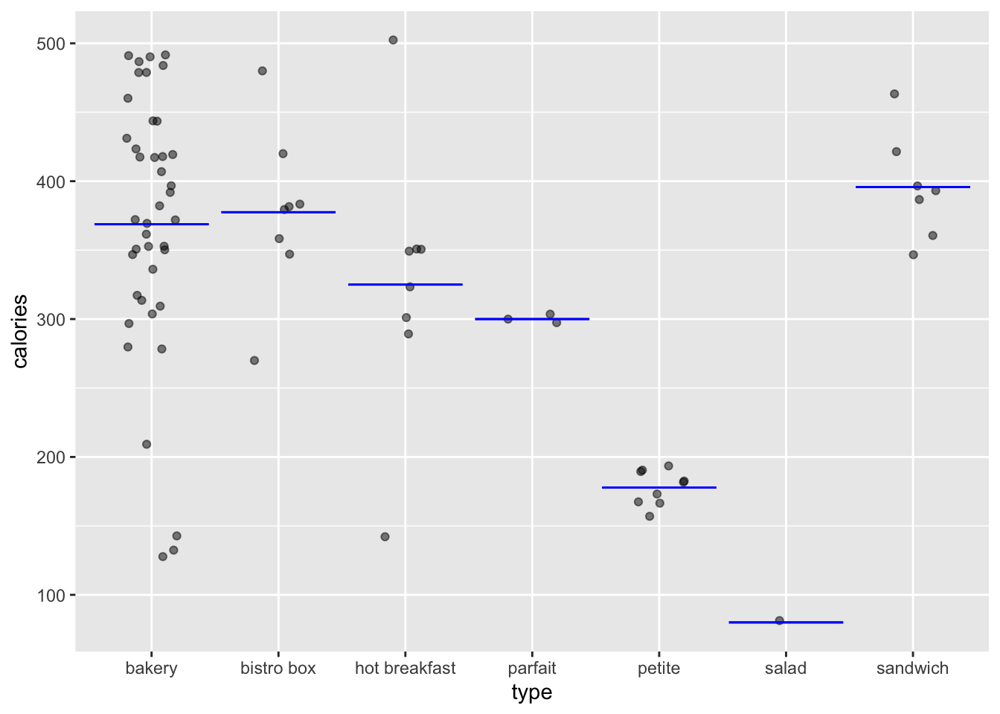

TenMileRace %>%
summarize(ave = mean(net), middle = median(net), sd = sd(net), n = n()) ave middle sd n
1 5599.065 5555 969.6564 8636This Lesson covers some preliminaries: techniques we use throughout the remaining lessons.
The first half of this course emphasized data wrangling and visualization. The well-named summarize() function is the natural wrangling choice to compute summaries such as means, medians, or standard deviations. For instance, this command calculates four summary statistics on the net running time recorded in the TenMileRace data frame:
TenMileRace %>%
summarize(ave = mean(net), middle = median(net), sd = sd(net), n = n()) ave middle sd n
1 5599.065 5555 969.6564 8636summarize() works hand-in-hand with group_by() to calculate groupwise summaries. The following wrangling statement, for instance, looks at the average net running time broken up according to the runner’s state of residence and presents the results from the fastest state downwards:
TenMileRace %>%
group_by(state) %>%
summarize(ave = mean(net), middle = median(net), sd = sd(net), n = n()) %>%
arrange(ave) %>%
head(10)# A tibble: 10 × 5
state ave middle sd n
<fct> <dbl> <dbl> <dbl> <int>
1 Australia 2872 2872 NA 1
2 Kenya 2934. 2874. 141. 14
3 Lithuania 2961 2961 NA 1
4 Japan 2992 2992 132. 2
5 Colombia 2998 2998 NA 1
6 Ethiopia 3185 3185 356. 2
7 EN 3251 3251 NA 1
8 Ukraine 3256 3256 NA 1
9 Russia 3267 3197 272. 3
10 Romania 3287. 3297 162. 3Wrangling is essential for many statistical purposes, not just summarizing but also setting up for making graphical displays, cleaning data, and assembling data from multiple sources.
Regression modeling is used only for summarizing. The summary describes the relationship between the response and explanatory variables. Think of it as a kind of substitute for summarize() when you want to describe relationships.
As we saw above, summarize() and group_by() are two different stages of wrangling that, used together, produce a separate summary for each group. Regression modeling, however, offers a rich alternative to grouping. The spirit of what one accomplishes in wrangling with group_by() is achieved in regression by using additional explanatory variables.
In its simplest mode, a regression can calculate means. The result will be identical to group_by()/summarize() but in a different format.
Here is the mean net running time calculated using both approaches.
TenMileRace %>% lm(net ~ 1, data=.) %>% coefficients()(Intercept)
5599.065 TenMileRace %>% summarize(mn = mean(net)) mn
1 5599.065The groupwise calculations also produce equivalent results, although the results are formatted in different ways.
TenMileRace %>% lm(net ~ sex, data=.) %>% coefficients()(Intercept) sexM
5916.3979 -635.6958 TenMileRace %>% group_by(sex) %>%summarize(mn = mean(net))# A tibble: 2 × 2
sex mn
<fct> <dbl>
1 F 5916.
2 M 5281.Regression of this sort calculates the mean of a reference group and the difference in means between the two groups, whereas the wrangling command presents the mean of each group.
data=. argument inside lm(). The simple . is doing something important, carrying the output of the earlier stages of the pipeline into the data= argument of lm().In regression, “grouping” is extended to quantitative variables. For instance,
TenMileRace %>% lm(net ~ age, data = .) %>% coefficients()(Intercept) age
5297.219248 8.189886 This report indicates a trend of net running time increasing with age by about 8 seconds per year.
The group_by() function can use a quantitative variable, but the result is a different number for each group rather than a trend.
TenMileRace %>% group_by(age) %>% summarize(mn = mean(net)) # A tibble: 68 × 2
age mn
<int> <dbl>
1 10 5635
2 12 5978
3 13 5405.
4 14 5620.
5 15 5166.
6 16 5522.
7 17 5716.
8 18 5259.
9 19 4573
10 20 5218.
# … with 58 more rowsWith multiple grouping variables, say age and sex, the output of summarize() becomes increasingly complicated. For example:
TenMileRace %>% group_by(sex, age) %>% summarize(mn = mean(net)) `summarise()` has grouped output by 'sex'. You can override using the `.groups`
argument.# A tibble: 127 × 3
# Groups: sex [2]
sex age mn
<fct> <int> <dbl>
1 F 10 5635
2 F 13 6831
3 F 14 5941.
4 F 15 4854
5 F 16 5678.
6 F 17 6011.
7 F 18 5720.
8 F 19 5285.
9 F 20 5970.
10 F 21 6057.
# … with 117 more rowsRegression keeps things simpler, reporting on trends:
TenMileRace %>% lm(net ~ sex + age, data = .) %>% coefficients() (Intercept) sexM age
5339.15545 -726.61948 16.89362 The trend reported from this regression model is an increase in net of about 16 seconds per year of age. Regression can summarize relationships in more detailed ways as well. The following model looks at the trend with age separately for males and females:
TenMileRace %>% lm(net ~ sex * age, data = .) %>% coefficients() (Intercept) sexM age sexM:age
5370.999953 -785.145163 15.961661 1.606559 Here, the age trend for women is an increase in net running time of 16 seconds per year of age, while for men, that increase is bigger, an extra 1.6 seconds per year of age.
There are good reasons why lm() organizes summaries the way it does. The lm() paradigm can make much more efficient use of data than group_by(). It also offers much more flexibility. lm() can handle multiple “grouping” variables together and even lets you “group” by quantitative variables.
Statistical thinking often involves quantifying uncertainty. Uncertainty appears where a newcomer to statistical thinking might not expect it. For example, consider “point” summaries such as the mean or median. So long as the arithmetic is correct, the result is inevitable; everyone doing the calculation will get the same result. The statistical thinker, however, includes the data collection process in the calculation. Each person carrying out his or her data collection process will get different results. The study-to-study variation calls for an interval display, where the interval covers the likely range of results.
Prediction is another context benefiting from an interval display. Prediction is imperfect. The predicted result—for instance, the baby’s due date—is typically different from the actual outcome. The statistical thinker knows how to estimate the likely range of the difference between the predicted and actual outcomes.
It is appropriate to be skeptical of a claim that male runners slow down by 1.6 seconds per year compared to females. After all, people differ; some age more gently than others. As we will see in Lesson 20, the results presented from a regression model depend partly on the play of chance in determining the particular people represented in the data. It is helpful to know how much chance affects the results. A summary can indicate this by a range of plausible values, in other words, an “interval” summary. Here is an interval summary on the coefficients from the running time versus age model:
TenMileRace %>% lm(net ~ sex * age, data = .) %>% confint() 2.5 % 97.5 %
(Intercept) 5269.766831 5472.233076
sexM -927.311125 -642.979202
age 13.104803 18.818520
sexM:age -2.144359 5.357478Notice that the interval on sexM:age includes zero.
Construct interval summaries using the appropriate extractor on a regression model. For instance, confint() generates an interval summary suggesting there might be no difference in the age trend for males and females.
Regression models, which will be the primary means of summarizing data in these Lessons, always have a response variable and typically have one or more explanatory variables.1
In these Lessons, we will place graphical depictions of model summaries in the context of actual data. Consequently, the graphical frame will reflect the choice of response and explanatory variables. The vertical axis will always represent the response variable. The horizontal axis will represent one of the explanatory variables. A point plot will display the data, or a jitter plot when there are categorical variables to be shown.
Another aspect of our unified data graphic format is that it will always be a point plot or, closely related, a jitter plot.
As all expecting parents know, a baby’s “due date” is hardly exact. Pregnancies vary in length. What accounts for this variation?
In this example, we will entertain the hypothesis that experienced mothers have systematically different gestation periods than first-time mothers. An appropriate response variable is duration of gestation. The explanatory variable needs to measure “experience,” which is a vague idea. We will make it concrete by representing it by the number of the mother’s pregnancies before the one reported in the data.
The Gestation data frame records more than 1200 births. gestation records the length of the pregnancy and will be our response variable. parity gives the number of previous births to the mother, starting at zero for a first-time mother. Although parity is encoded as a number, it has only discrete values—0, 1, 2, … We will therefore graph it as a categorical variable, using jittering to avoid overplotting. There are not many rows with parity greater than five; we will focus on those.
Gestation %>%
filter(parity <= 5) %>%
#mutate(parity = as.character(parity)) %>%
ggplot(aes(x=parity, y=gestation)) +
geom_jitter(alpha=0.2, width=0.2, height=0) 
width=0.2 controls the amount of horizontal jittering. We chose it to make the columns of data clear. There is no need to jitter in the vertical direction, so we set height=0This graph shows some things at a glance. For example, a typical gestation period is about 275 days (about nine months), and it is much more common to have a low parity than a very high one.
It is easy to see a pattern in Figure 19.1: It looks like mothers with high parity tend to have gestation periods more reliably close to 280 days than mothers with low parity. However, on the other hand, maybe this pattern is an illusion, an artifact of the small number of pregnancies with parity 3, 4, or 5 and, therefore, less opportunity to see extreme values for gestation.
One way to explore this idea is to plot the density of the dots as a function of gestation for each of the parity levels individually. A “violin” layer will make it easier to compare the distributions in the different columns, despite the unevenness in the case count. Figure 19.2 gives an example.
Gestation %>%
filter(parity <= 5) %>%
ggplot(aes(x=parity, y=gestation)) +
geom_jitter(alpha=0.2, width=0.2, height=0) +
geom_violin(aes(group=parity), fill="blue", alpha=0.2, color=NA)
The violin plot is a more flexible display of the distribution of gestation period than a histogram. The histogram has all those bars that clutter up the display. Even worse, one of the axes in the frame of a histogram plot is “count” or maybe “density.” Such a frame is inconsistent with the response/explanatory axes used for the data. The violin is drawn in the no-mans-land between the different levels of parity, just as the jittering moves data away from a single vertical line into that same no-mans-land.
This idea of using the graphical no-mans-land between levels of a categorical explanatory variable is not new. You encountered it earlier when you drew box plots. ?fig-density-box adds a box-plot annotation layer on top of the violin-plot layer.
Gestation %>%
filter(parity <= 5) %>%
ggplot(aes(x=parity, y=gestation)) +
geom_jitter(alpha=0.2, width=0.2, height=0) +
geom_violin(aes(group=parity), fill="blue", alpha=0.2, color=NA) +
geom_boxplot(aes(group=parity), color="blue", fill=NA, alpha=.5)
In practice, there is little reason to layer a box plot on top of a violin. The violin does the job nicely on its own.
Regression modeling will be a fundamental tool in these Lessons for summarizing data. Regression models always have a quantitative response variable, although explanatory variables can be either quantitative or categorical.
Often, the modeling situation calls for a response variable that is categorical. Expert modelers can use specialized modeling methods to handle such situations. However, categorical response variables often have just two levels, e.g., Alive/Dead, Promoted/Not, or Win/Loss. We will name the general class of such variables as “yes/no” or, equivalently, “zero-one” variables.
Yes/no response variables can be represented using 0 for one level and 1 for the other. This numerical “0/1 encoding” is directly suited for regression modeling and enables us to extend the scope of regression models. The output of the regression model is always numerical. Nothing in the regression technique restricts those outputs to exactly zero or one, even when the response variable is of the yes/no type. Usually, the modeler interprets such numerical output as probabilities or, more generally, as measures to be converted to probabilities.
zero_one().
The zero_one() function converts a yes/no variable to the numerical zero-one format. zero_one() allows you to specify which of the two levels is represented by 1.
To illustrate, consider the mosaicData::Whickham data frame, which records a 1972-1974 survey, part of a study of the relationship between smoking and mortality. Twenty years after the initial survey, a follow-up established whether or not each person was still alive.
?(caption)
| outcome | smoker | age |
|---|---|---|
| Alive | Yes | 23 |
| Alive | Yes | 18 |
| Dead | Yes | 71 |
| Alive | No | 67 |
| Alive | No | 64 |
| Alive | Yes | 38 |
The outcome variable in Whickham records the result of the follow-up survey. It is a categorical variable with levels “Alive” and “Dead.” To examine what the data have to say about the relationship between smoking and mortality, we construct a model with outcome as the response variable and smoking as an explanatory variable. Before doing so, we translate outcome into a zero-one format. Like this:
Whickham %>%
mutate(alive = zero_one(outcome, one="Alive"))| outcome | smoker | age | alive |
|---|---|---|---|
| Alive | Yes | 23 | 1 |
| Alive | Yes | 18 | 1 |
| Dead | Yes | 71 | 0 |
| Alive | No | 67 | 1 |
| Alive | No | 64 | 1 |
| Alive | Yes | 38 | 1 |
Note the correspondence between the outcome and the newly created alive variable.
Starbucks is a famous coffee-shop franchise with more than 30,000 branches (as of 2021). People go to Starbucks for coffee, but they often buy something to eat as well. In this demonstration, we will look at the calorie content of Starbucks’ food offerings. As always, when conducting a statistical analysis, it is helpful to have in mind the motivation for the task. So we will imagine, tongue in cheek, that we want to make food recommendations for the calorie-conscious consumer.
First, a point summary of the calories in the different types of food products available at Starbucks:
point_summary <-
df_stats(calories ~ type,
data = openintro::starbucks, mean)
point_summary response type mean
1 calories bakery 368.7805
2 calories bistro box 377.5000
3 calories hot breakfast 325.0000
4 calories parfait 300.0000
5 calories petite 177.7778
6 calories salad 80.0000
7 calories sandwich 395.7143This summary supports the sensible advice to choose salads or smaller portions (type “petite”) to avoid calories. One might go further, for example, concluding that a sandwich is a poor choice (in terms of calorie content), so lean toward parfaits or hot breakfasts. We can even imagine someone concluding from this summary that a bistro box is a better calorie-conscious choice than a sandwich.
Figure 19.4 shows the point summary, using the raw data to put things in context.
openintro::starbucks %>%
ggplot(aes(x=type, y=calories)) +
geom_jitter(width=0.2, alpha=0.5) +
geom_errorbar(data=point_summary, aes(ymin=mean, ymax=mean),
y=NA, color="blue") +
geom_point(data=point_summary, aes(y=mean), color="red")
Plotting the point summary in the context of the raw data shows at a glance that the point summary is not of any genuine use. For instance, using the point summary without the data, we might conclude that hot breakfasts are better than sandwiches. However, the data display suggests otherwise; there is just one low-calorie breakfast. The others are much like sandwiches.
A point summary is compact but cannot represent the variation within each food type. An interval summary, as in Figure 19.5, does show this variation.
openintro::starbucks %>%
ggplot(aes(x=type, y=calories)) +
geom_jitter(width=0.2, alpha=0.5) +
geom_errorbar(data=point_summary, aes(ymin=mean, ymax=mean),
y=NA, color="blue") 
Unlike point summaries, interval summaries can overlap. Such overlap indicates that the groups are not all that different. Here, the interval summary indicates an appropriate conclusion; “Don’t make your diet choices based on food type. Look at the calorie content of individual items before choosing.”
Admittedly, in this simple setting the data themselves would lead to the conclusion. However, as we move into more complicated settings, it will become infeasible to see patterns quickly straight from the data.
Actually, the previous sentence should say, “zero or more explanatory variables.” The model with no explanatory variables (and y as the response variable) is denoted by y ~ 1. This simple model represents the hypothesis that nothing can explain the variability in y.↩︎